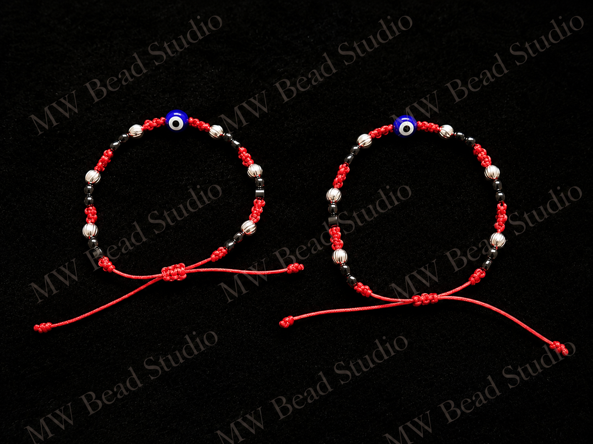

Handmade character
The human touch is part of the beauty. Each piece carries subtle details that make it one of a kind.
Our story
MW Bead Studio is rooted in a simple belief: the pieces we keep close should feel personal.
Every design is assembled by hand, balancing color, texture, sparkle, and meaning to create jewelry that feels as special as the person wearing it.

Thoughtful by designWhat matters to us
The human touch is part of the beauty. Each piece carries subtle details that make it one of a kind.
We listen first, creating around the memories, people, and ideas that are important to you.
Our designs are made to become keepsakes—pieces you reach for now and treasure later.
Made with you in mind